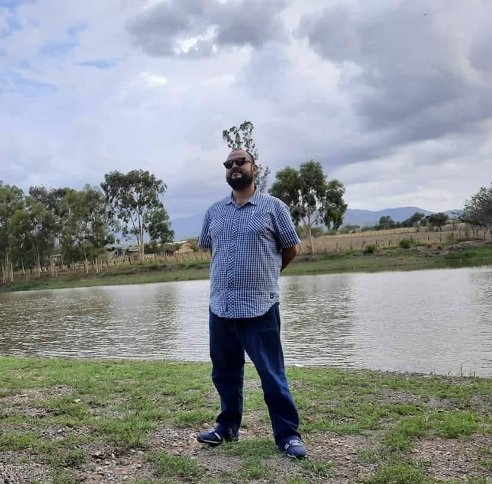

Currículum Vitae
Abogado • Especialista en Derecho Electoral y Transparencia Gubernamental
Licenciado en Derecho con más de 12 años de trayectoria en el servicio público, desempeñando cargos directivos en el ámbito municipal e institucional en el Estado de Jalisco.
Soy Licenciado en Derecho egresado del Centro Universitario de los Valles (CUValles) de la Universidad de Guadalajara, una de las instituciones educativas más reconocidas del país.
A lo largo de mi carrera he acumulado más de 12 años de experiencia en el servicio público, participando activamente en diferentes instancias del Estado de Jalisco, tanto en el ámbito municipal como en organismos electorales autónomos.
Mi trayectoria me ha permitido desarrollar una sólida formación práctica en materia de derecho electoral, transparencia gubernamental, derecho administrativo y seguridad pública, complementada con la participación en diversos diplomados especializados en estas áreas.
Servicio Público — Jalisco
Instituto Electoral y de Participación Ciudadana del Estado de Jalisco (IEPCJALISCO)
Responsable de coordinar y supervisar las actividades jurídicas del Instituto, asesorando a los órganos directivos en materia electoral, garantizando el cumplimiento del marco normativo aplicable y la legalidad en los procesos electorales del Estado de Jalisco.
Ámbito Municipal — Jalisco
Administración Municipal
Dirección y supervisión del área jurídica del municipio. Elaboración de dictámenes, contratos y convenios. Representación legal del municipio ante tribunales y autoridades administrativas. Asesoría en materia de derecho administrativo y garantía de legalidad en los actos de gobierno.
Ámbito Municipal — Jalisco
Dirección de Seguridad Pública Municipal
Gestión administrativa de la corporación policial municipal. Supervisión del cumplimiento de normativas de seguridad pública, coordinación de recursos humanos, materiales y financieros, así como el seguimiento a protocolos y procedimientos institucionales.
Ámbito Municipal — Jalisco
Contraloría Municipal
Supervisión del ejercicio del gasto público municipal y fiscalización de los recursos. Implementación de acciones de control interno, auditorías administrativas y seguimiento a observaciones. Vigilancia de la correcta aplicación de los principios de transparencia, rendición de cuentas y legalidad en la administración pública municipal.
Centro Universitario de los Valles (CUValles)
Universidad de Guadalajara
Formación sólida en ciencias jurídicas con énfasis en derecho público, administrativo y constitucional, egresado de una de las universidades públicas más prestigiosas de México.
Formación Especializada
Actualización y profundización en la normativa electoral mexicana, procesos electorales, contencioso electoral y participación ciudadana.
Formación Especializada
Estudio profundo de los marcos normativos sobre acceso a la información, protección de datos personales y rendición de cuentas en el sector público.
Diversos Diplomados e Instituciones
Participación activa en cursos, diplomados y programas de actualización jurídica en áreas de derecho administrativo, seguridad pública y fiscalización del gasto público.
Amplio conocimiento en legislación electoral, procesos comiciales, contencioso electoral y organismos autónomos electorales, adquirido por práctica profesional y formación especializada.
Experto en normativa de acceso a la información pública, protección de datos personales (LFPDPPP) y rendición de cuentas ante la ciudadanía.
Profundo dominio del marco jurídico que regula la actuación de los municipios, incluyendo reglamentación, contratos, sanciones y actos de autoridad.
Experiencia en la gestión administrativa y normativa aplicable a corporaciones policiales municipales, protocolos de actuación y cumplimiento legal.
Expertise en control interno, fiscalización del gasto público, auditorías administrativas y seguimiento a observaciones de órganos superiores de fiscalización.
Amplia experiencia en la elaboración de dictámenes, contratos, convenios y representación legal de instituciones públicas ante tribunales y autoridades.
Si desea obtener más información sobre mi trayectoria profesional, explorar oportunidades de colaboración o requerir asesoría en materia jurídica electoral o de transparencia gubernamental, no dude en contactarme.